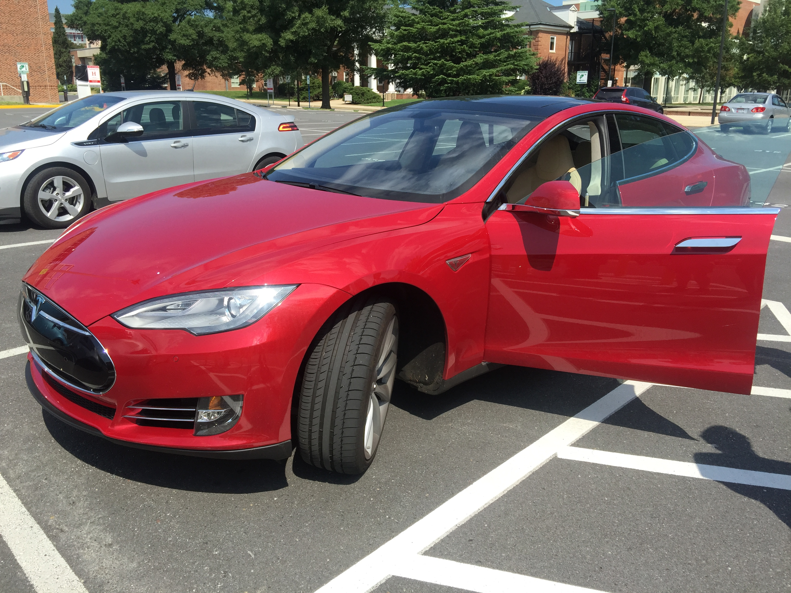
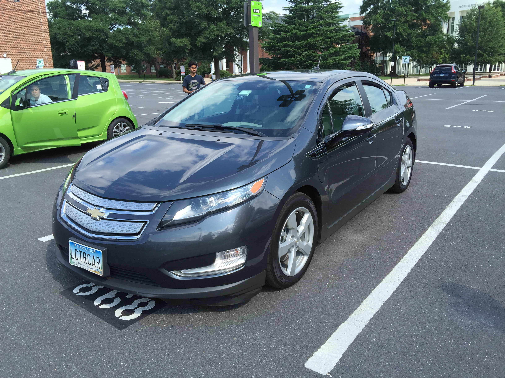

Ever since I began my engineering studies at Virginia Tech, I have had a great passion for research. A large part of research involves reading/studying Master's Theses, Ph.D. Dissertations, and various conference and journal publications. For years I have dreamed of being an author. Now I finally am an author! It is a privilege and an honor to be a co-author on a paper being presented at the premier global event in my field - the 31st Annual IEEE Applied Power Electronics Conference & Exposition, to be held in Long Beach, California next March. After 3 months of waiting, our paper was accepted by the review committee yesterday. I can't wait to share our work with the world!
A. Mallik; B. Faulkner; A. Khaligh, “Control of Single-Stage Three-Phase Buck-Boost-Type Power Factor Correction Rectifier,” in Applied Power Electronics Conference and Exposition (APEC), 2016 IEEE
Had such a great time this morning, at the Electric Vehicle meet-up!
It was great to drive and see some awesome examples of Power Electronics at work.
And yes, the torque is instantaneous. :D
Please see pictures from the event below!
Such a joy to drive the Chevrolet Spark EV!
Tesla Model S

Chevy Volt

My First Paper Submission!
July 22, 2015
Hello again! It has been almost a month since my last posting, but much has happened in the intermediate.
Both myself, and my Graduate Mentor, second year doctoral candidate, Ayan Mallik, have submitted a paper entry to the 2016
Applied Power Electronics Conference and Exposition (APEC). This conference is located in Long Beach, CA on March 20-24, 2016.
Our Title:
Control of a Single-Stage Three-Phase Buck-Boost Power Factor Correction Rectifier
The research is being conducted under the guidance of my Research Advisor, Alireza Khaligh, Ph.D.
Power Electronics Engineering Research Intern - Summer 2015
June 15, 2015
I am now entering my third week as a Research Engineering Intern. I have loved every minute of learning and researching at such a fine institution!
My research involves modeling and simulation of power factor correction converters for More Electric Aircraft.
I am currently working on projects related to the Boeing 777 and 787.
My literature reviews, of the 777 and 787 electric power generation and distribution systems can be found here, and here, respectively.
I am fortunate to conduct research under the guidance of Alireza Khaligh, Ph.D., Assistant Professor and Director, Power Electronics, Energy Harvesting and Renewable Energies Laboratory (PEHREL)